Aqui as data que fui visitar mues familiares: confira
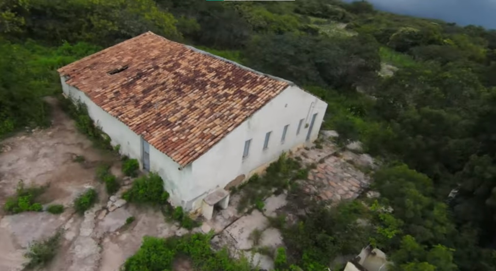1984
Em dezembro de 1984, quase dois anos depois de vir para São Paulo, viajei para o Ceará, um lugar que eu havia deixado em janeiro de 1983. O objetivo da viagem era rever meus pais, irmãos e amigos, e a experiência foi extremamente gratificante. Cada reencontro trouxe uma grande felicidade, satisfação e alegria. A sensação de estar de volta às minhas raízes, cercado por pessoas queridas, foi indescritível. Senti muito na despedida, fiquei mais emocionado ao voltar para São Paulo do que da primeira vez que vim
No entanto, ao retornar para São Paulo, onde eu havia estabelecido minha nova residência, fui tomado por um profundo sentimento de saudade. A solidão se instalou, e a ausência daqueles momentos preciosos com minha família e amigos tornou-se evidente. A cidade grande, com toda a sua agitação, não conseguia preencher o vazio deixado pela distância daqueles que amo.
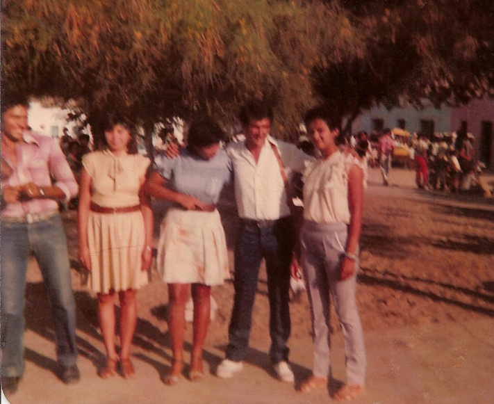1987
Recordo-me com carinho dos momentos felizes ao voltar para casa e estar com minha família. Àquela altura, a casa já não era a mesma de antes; quatro das minhas irmãs tinham seguido seus próprios caminhos. Três haviam se casado e uma se mudara para o Rio de Janeiro. Eu, então, com apenas 22 anos, iniciava um novo capítulo em minha vida ao lado de uma garota que viria a ser a mãe dos meus filhos.
Lembro-me vividamente da alegria de minha mãe ao saber que eu estava com alguém. Sua felicidade era evidente, talvez porque sua preocupação com a minha solidão finalmente se dissipara. Ela sempre se inquietava com o fato de eu estar sozinho. Ter encontrado alguém, para ela, era um sinal de que eu estava bem encaminhado, cercado pelo amor que ela sempre desejou para mim.
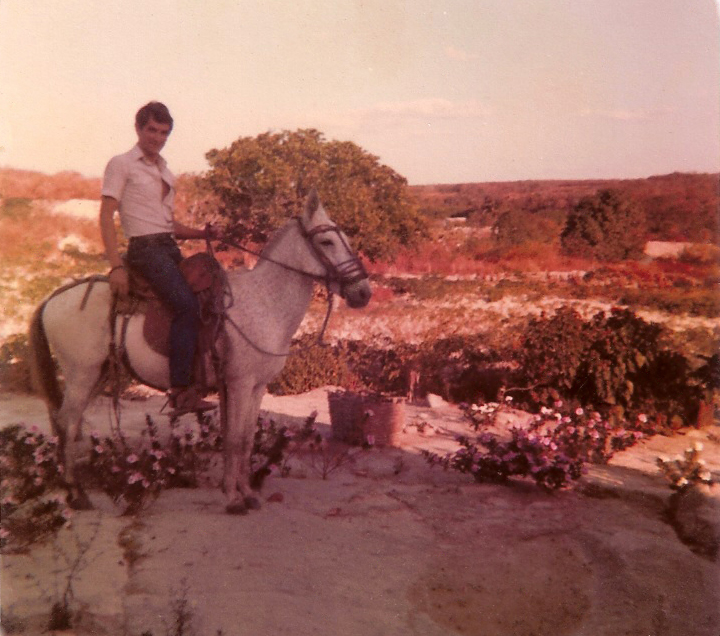1994
Cada ano que passava, a saudade só aumentava. Fiquei sete anos sem retornar, e nesse período, já tinha meus filhos: Liliane e Rodrigo. Quase doze anos depois de minha partida inicial, senti um choque ao voltar. Muitas pessoas já não conhecia mais, e até mesmo meus irmãos mais novos eram estranhos para mim.
Eu enfrentava dificuldades e preocupações com dois filhos pequenos, o que tornava a vida um tanto desafiadora. No entanto, a gratificação de rever meu pai compensou todos os obstáculos. Infelizmente, ele faleceu um ano depois, com apenas 66 anos. Se não tivesse ido naquela ocasião, teria ficado muito mais tempo sem vê-lo, uma ausência que doeria profundamente.
Naquela época, nos comunicávamos principalmente por cartas, já que a comunicação era precária. As duas últimas cartas que ele me enviou só chegaram após sua partida, uma ironia cruel do destino que só ampliou a saudade e o luto. No entanto, a visita me deu a chance de vê-lo uma última vez, um consolo que guardarei para sempre.
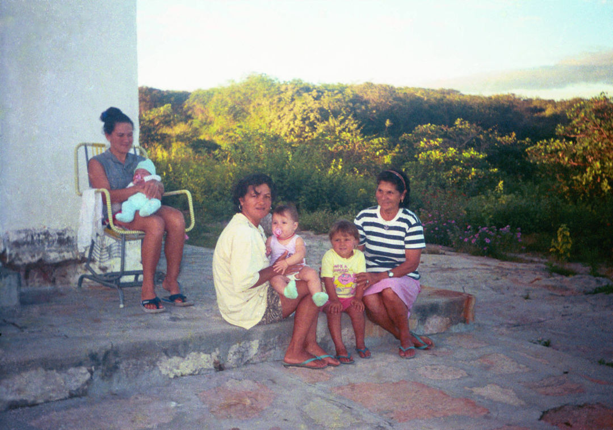2003
Após nove anos desde a última visita, retornei e encontrei minha mãe muito diferente, mas feliz. Ela havia se mudado do sítio para a cidade e continuava a se preocupar comigo, sempre comentando sobre minha magreza, como se eu tivesse sido gordo alguma vez. Chegava a pedir que eu não usasse camisetas de regata, pois parecia que eu ficava ainda mais magro nelas. Apesar da ausência do meu pai, fiquei feliz com a viagem.
Foi uma experiência agradável, especialmente por ter ido com meu filho Rodrigo. Ele se divertiu imensamente, montando nos animais, brincando com os primos e explorando o interior livremente. A emoção de Rodrigo ao embarcarmos no ônibus para voltar foi um momento inesquecível, refletindo o impacto positivo daquela visita para nós dois.
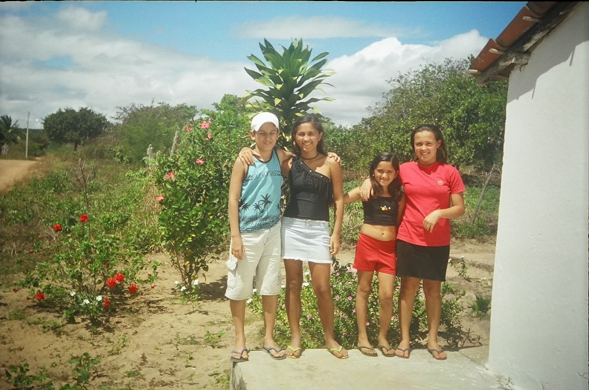2008
Como sempre, a viagem tinha como propósito principal rever meus familiares, especialmente minha mãe, que se mantinha firme e forte. Eu já morava sozinho há quatro anos e a saudade apertava. Apesar de cinco anos terem se passado desde a última visita, quando fui com Rodrigo, as coisas não mudaram muito por lá.
Rever minha mãe era uma necessidade, quase um ritual que trazia alívio para a saudade acumulada. Ela continuava com a mesma força de espírito que sempre admirei, e estar com ela novamente renovava minhas energias. A familiaridade do lugar e das pessoas me trazia uma sensação reconfortante de estabilidade em um mundo que parecia mudar rápido demais.
Cada momento com a família era precioso, repleto de conversas, risadas e histórias compartilhadas. Apesar de não ter sido tanto tempo desde a última visita, cada reencontro era uma reafirmação dos laços que nos uniam e que, apesar da distância, permaneciam inquebrantáveis.
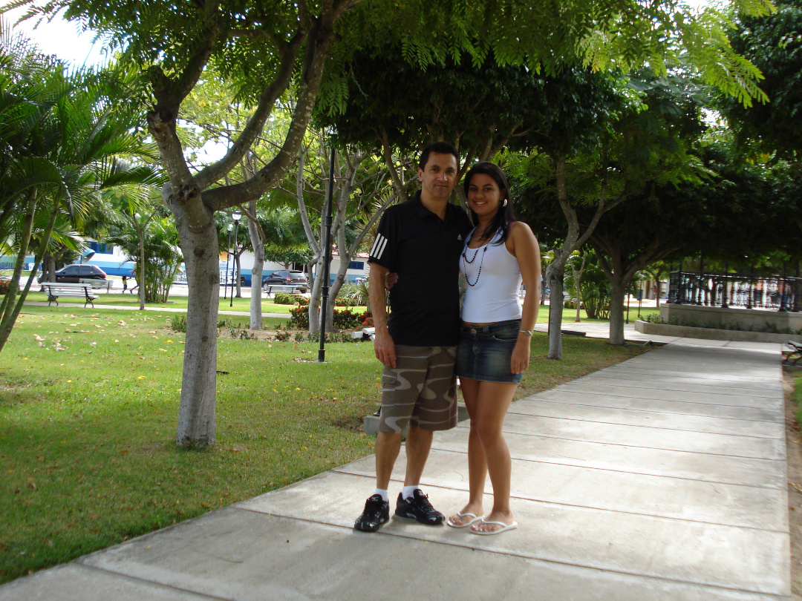2010
Canindé, é uma cidade conhecida pelo Santuário de São Francisco das Chagas, um importante centro de peregrinação no Brasil. O santuário atrai milhares de fiéis todos os anos, especialmente durante a festa de São Francisco, que acontece em outubro
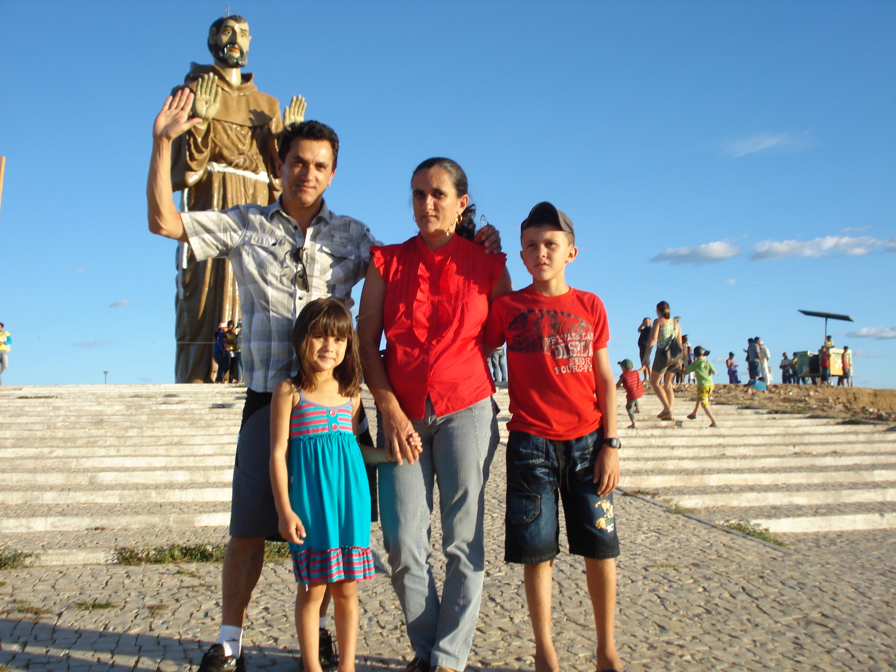2012
Eu e Miriam, minha sobrinha e meia-irmã querida, nossa ligação é especial e cheia de carinho.
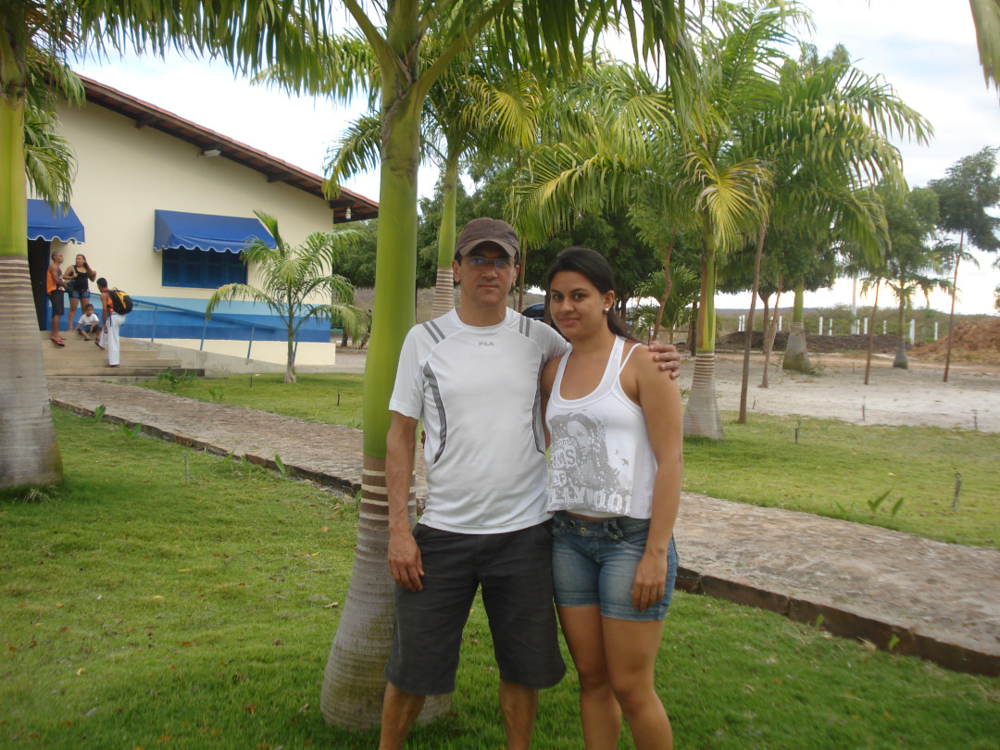2015
Aniversário de 60 anos, de minha irmazinha Letícia. Neste dia tão significativo, reunimos para celebrar não apenas os 60 anos dela, mas também a pessoa maravilhosa que ela é. Cada sorriso, cada abraço e cada palavra de carinho são um reflexo do amor e da admiração que sentimos por ela.
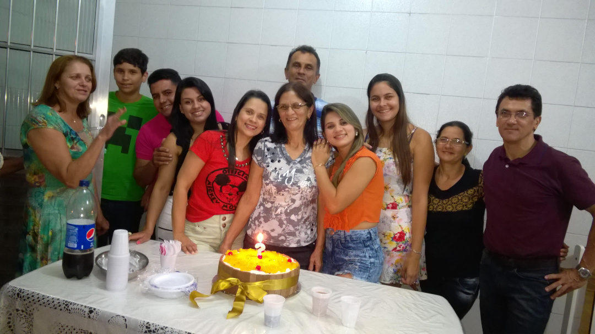2017
Aventura na Serra de Ibiapaba. Nossa jornada começou cedo, com o sol ainda tímido no horizonte. Partimos para uma trilha desafiadora de 7 horas na majestosa Serra de Ibiapaba, localizada no Parque Nacional de Ubajara. A natureza ao nosso redor era deslumbrante, com a vegetação exuberante e o canto dos pássaros nos acompanhando a cada passo. Após horas de caminhada, finalmente chegamos à gruta, um verdadeiro tesouro escondido no coração da serra. A descida foi íngreme e exigiu cuidado, mas a vista lá de baixo valeu cada esforço. A gruta era um espetáculo à parte, com suas formações rochosas impressionantes e a sensação de estar em um lugar intocado pelo tempo. Depois de explorar a gruta e tirar muitas fotos, iniciamos o caminho de volta. A tarde já avançava e o cansaço começava a pesar em nossos corpos. Cada passo parecia mais difícil, mas o espírito de aventura nos mantiveram firmes. Finalmente, ao retornar ao ponto de partida, estávamos todos exaustos, mas com um sentimento de realização e uma coleção de memórias inesquecíveis

2022
Em visita a casa da Mirinha. Da esquerda para a direita: Letícia, eu, Miriam, Maxuel com a filha Larissa e Teresa
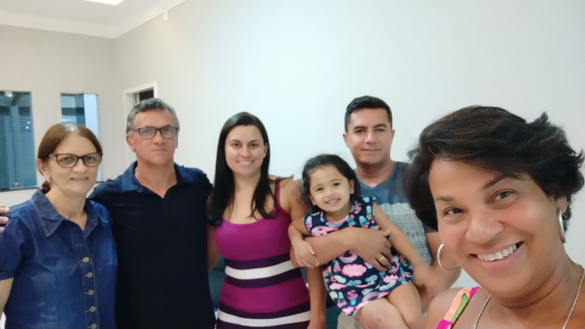2024
Cachoeira da barra do Sotero, fomos recebidos pela visão maravilhosa da cachoeira, com suas águas cristalinas caindo em cascata sobre as rochas. Não perdemos tempo e logo mergulhamos na água refrescante, sentindo o alívio imediato do calor. A sensação de estar ali, rodeado pela natureza intocada, era simplesmente indescritível. Passamos horas aproveitando a cachoeira, deixando a correnteza levar nossos pensamentos. A energia revitalizante da água nos encheu de alegria e tranquilidade. Quando finalmente decidimos partir, estávamos renovados e gratos por aquele momento especial.
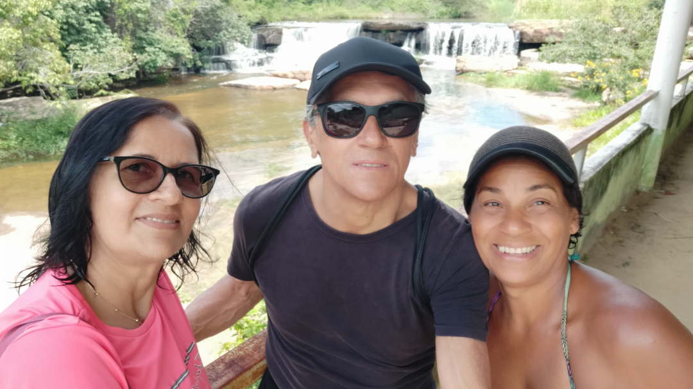